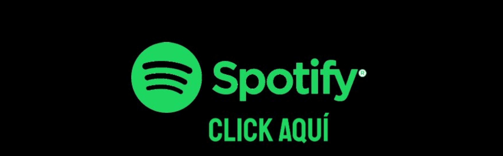

Spotify Música para todos y por todos
Spotify: un servicio MULTIPLATAFORMA
Aunque no lo crean Spotify se encuentra en todo dispositivo que tenga acceso a internet, es decir desde un teléfono celular hasta un Smart TV. La tecnología ha avanzado a pasos grandes y las aplicaciones como servicios no se quedan atrás. Es por eso que Spotify es tan reconocido en todo el mundo, y no es para menos. A continuación, te mostraremos los dos lados de Spotify, uno para nosotros los oyentes y el otro para los artistas, donde pueden subir su propia música y llegar a más gente.
|

Spotify para usuarios |
Spotify para artistas |
쯊e interesa conseguir un plan premium?
Con Spotify premium puedes escuchar musica en alta calidad sin anuncios y con muchos otros beneficios dependiendo del plan que elijas, la flexibilidad de precios que ofrecen los planes premium de Spotify son accesibles para cualquier usuario que pueda comprarselo sin duda será una adquisición de la que no se arrepentirá

Click aquí